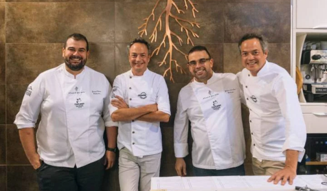

Reservar
Reservar¿Qué Somos?

En el corazón de nuestra cocina exótica se encuentra la pasión compartida por la diversidad gastronómica de todos los rincones del planeta. Somos un equipo de cuatro apasionados hombres de mediana edad, unidos por el deseo de llevar a su mesa una experiencia gastronómica inolvidable.
En nuestro restaurante, no solo servimos comidas; ofrecemos un viaje sensorial que cambia cada semana. Exploramos los sabores auténticos de diferentes partes del mundo, llevándolos a través de una travesía culinaria única. Nuestro compromiso con la autenticidad y la calidad impulsa cada creación en nuestra cocina.
Cada plato es una obra maestra cuidadosamente elaborada, una expresión de la riqueza cultural y la tradición culinaria que inspira nuestra cocina. Creemos en la inigualable experiencia de probar algo nuevo, de sumergirse en lo desconocido a través de los sabores y aromas que transportan directamente a la región que exploramos esa semana.
¿Quiénes somos?
Nuestros fundadores, con décadas de experiencia compartida en la cocina y la exploración gastronómica, decidieron dar vida a Flawors como un tributo a su deseo compartido de llevar a la mesa de cada comensal una experiencia inigualable. Cada uno aporta su perspectiva única, sus habilidades culinarias excepcionales y una dedicación apasionada a la autenticidad.
La historia de Flawors se teje con los hilos de sus viajes culinarios alrededor del mundo. Desde las calles animadas de Bangkok hasta las trattorias ocultas de Italia, nuestros fundadores han absorbido la esencia de cada cultura, llevando consigo recuerdos que se traducen directamente en los platos que servimos. Cada menú semanal es un capítulo nuevo en esta historia culinaria en constante evolución.
Con una filosofía arraigada en la innovación y la tradición, Flawors se esfuerza por ofrecer experiencias que no solo satisfacen el paladar, sino que también cuentan historias. Cada plato cuenta una narrativa, cada ingrediente lleva consigo un recuerdo y cada visita es una oportunidad de explorar un nuevo rincón del vasto mapa gastronómico mundial.